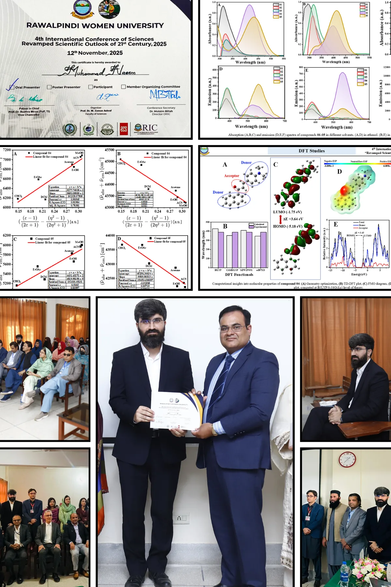
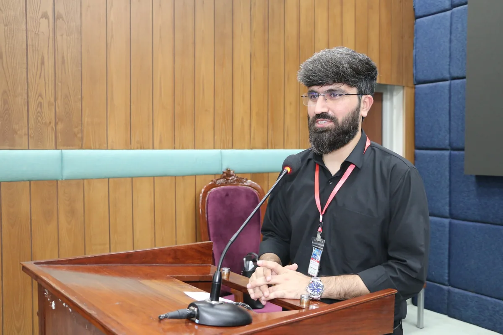

Experiences & milestones
People, places, opportunities, and lessons that shaped the journey.
Experiences, questions, and lessons along the way — from school classrooms in Bannu to chemistry laboratories and international research conversations.
In Grade 7, I wrote that I wanted to leave a name that time could not erase. Years later, that dream has become a journey of learning, chemistry, research, setbacks, and gratitude.
Read my story →
People, places, opportunities, and lessons that shaped the journey.
The decisions, disappointments, surprises, and discoveries behind the papers.
Questions worth asking about molecules, methods, and research culture.
Five reflections on presenting research and working with scientific communities.

From the synthesis bench at LUMS to the ACS Spring meeting in Atlanta, my naphthyl chalcone project travelled with a question: how do deliberate molecular …
Read the story ↗
In Doha, I presented “Synthesis, Photophysical, Electrochemical, and DFT Studies of Naphthyl Chalcones for Photovoltaic Applications.” The meeting brought …
Read the story ↗
At Rawalpindi Women University, I delivered an oral presentation on naphthyl chalcone-based organic semiconductors. I aimed to tell a clear scientific stor…
Read the story ↗
The theme “Chemistry for a Sustainable Future: From Research to Practical Impact” brought me back to a question every researcher should ask: how does a car…
Read the story ↗
Research is not just about the molecules we make. It is also about the solvent we use, the consumables we discard and the safety of the practices we introd…
Read the story ↗Have a thought about my journey, a question about research, or a story of your own? I would love to hear from you.
Share a comment, ask a question, or tell me what resonated with you.
Tell me about your educational journey, research experiences, or an idea worth discussing.
No account needed. Messages are sent privately for review and are never published automatically. Please avoid including confidential or sensitive information. Prefer email?